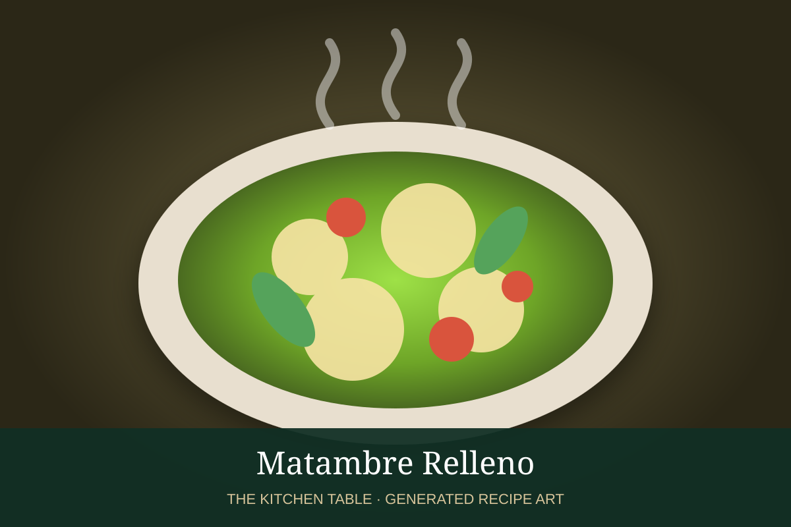

← Back to all recipes
MEAT · URUGUAYAN
Matambre Relleno
Rolled flank steak filled with egg, vegetables, herbs, and peppers, cooked until tender and sliced into spirals.
2 hrServes 8

Photo: Montevideo Portal
Ingredients
- 1 large matambre or flank steak, about 2 1/2 to 3 lb
- 4 hard-boiled eggs
- 2 carrots, cooked until just tender and cut into strips
- 1 roasted red pepper, cut into strips
- 2 cups baby spinach or chopped parsley
- 3 garlic cloves, minced
- 1 tbsp dried oregano
- Salt and black pepper
- Butcher’s twine
Preparation
- Place the beef flat on a work surface and pound any thick areas so it is an even thickness. Season with salt, pepper, garlic, and oregano.
- Arrange spinach or parsley, carrots, roasted pepper, and whole or halved hard-boiled eggs over the meat, leaving a border around the edges.
- Roll the meat tightly into a cylinder and tie securely with butcher’s twine every 1 to 2 inches.
- Place in a large pot of gently simmering salted water or broth and cook until tender, about 1 1/2 hours. Alternatively roast, tightly wrapped, at 350°F until tender.
- Cool slightly under a light weight if you want compact slices. Remove the twine and cut into thick rounds.
- Serve warm or chilled, with salad, potatoes, or chimichurri.